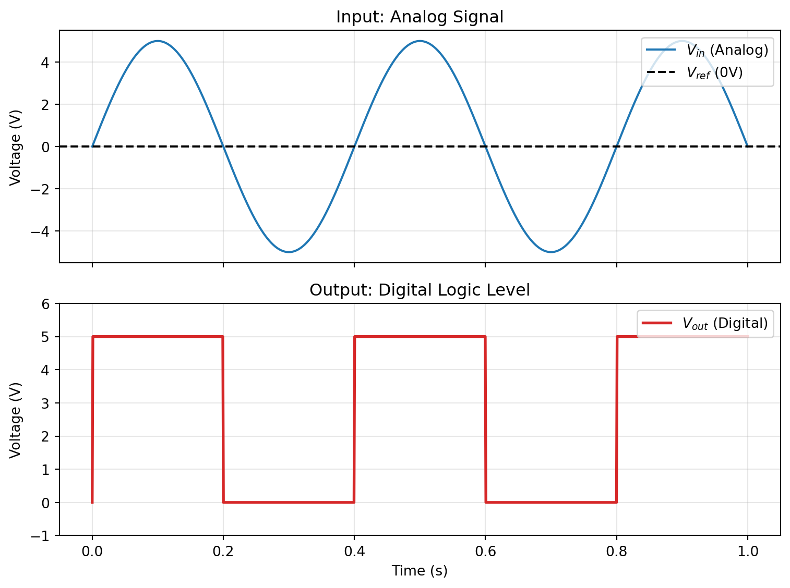

Code
import numpy as np
import matplotlib.pyplot as plt
t = np.linspace(0, 1, 1000)
freq = 2.5
amplitude = 5
# Analog Input: Sine Wave
v_in = amplitude * np.sin(2 * np.pi * freq * t)
# Reference Voltage (Threshold)
v_ref = 0
# Comparator Output (Digital)
# Ideally switches between +5V and 0V
v_out = np.where(v_in > v_ref, 5, 0)
fig, (ax1, ax2) = plt.subplots(2, 1, figsize=(8, 6), sharex=True)
# Plot Analog Input
ax1.plot(t, v_in, label='$V_{in}$ (Analog)', color='tab:blue')
ax1.axhline(v_ref, color='black', linestyle='--', label='$V_{ref}$ (0V)')
ax1.set_title("Input: Analog Signal")
ax1.set_ylabel("Voltage (V)")
ax1.legend(loc='upper right')
ax1.grid(True, alpha=0.3)
# Plot Digital Output
ax2.plot(t, v_out, label='$V_{out}$ (Digital)', color='tab:red', linewidth=2)
ax2.set_title("Output: Digital Logic Level")
ax2.set_ylabel("Voltage (V)")
ax2.set_xlabel("Time (s)")
ax2.set_ylim(-1, 6)
ax2.legend(loc='upper right')
ax2.grid(True, alpha=0.3)
plt.tight_layout()
plt.show()